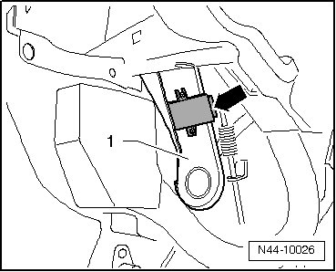

Tire Pressure Monitoring System, Generation 1
Tire Pressure Monitoring Control Module
The tire pressure monitoring control module (J502) is installed on the mounting bracket for the parking brake pedal.
Removing
- Remove driver's side footwell cover..
- Disconnect harness connector and remove tire pressure monitoring control module (J502) - arrow - from the mounting bracket for the parking brake pedal - 1 -.

Installing
Installation is the reverse of removal, with special attention to the following:
- Secure control module to the mounting bracket for the parking brake pedal using new expanding rivets.
- Code and calibrate control module.